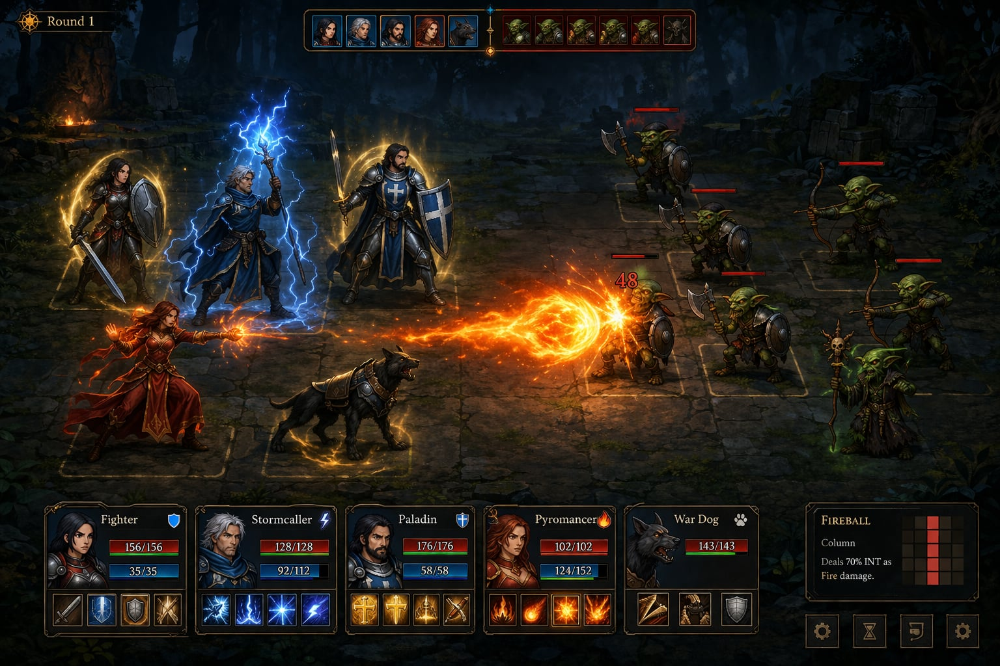

Manual Mode
+ UI Overhaul
12-phase design spec • 2026-04-29
Planning-only tree. No code has shipped yet.
Full plan: /plan/ • Roast: /plan/#phases/12-review-roast.md
The Ask
1 — Manual Combat Mode
Player takes one action per character per round. Hardcore difficulty locks to manual. Companions auto-play. Items are free actions.
2 — Graphical UI Overhaul
Match the reference image: stone-tile 2.5D playfield (80% ground / 20% top), stylized SVG borders, per-character spell rail, top-of-screen turn-order strip.
3 — Background Art Regen
Per-act prompt direction. 3 variants per act = 18 total. All 18 generated 2026-04-30. Archive originals.
4 — Clean Refactor
Keep formulas.js untouched. Consolidate multi-attack weapons into one turn. Plan for future positional movement without shipping it.
Reference Image

Upper 20% = atmospheric top.
Perspective: converges to upper-center (~15% from top), not a horizon line.
12-Phase Map
Palette • Grid
Components
Audit
CombatScreen
Game Loop
Design
Screen States
9 defined
2.5D Math
6×6 tiles
80/20 Rule
Per-act spec
DOM spec
Spell buttons
3 variants
Token system
Glyph dict
SVG rules
Keyboard
Animations
iPhone 14
Portrait
Gaps • Fixes
5 actions
Phase 11 = this slideshow • Phase 12 roast amended 8 contradictions in-place • M387–M394 is the implementation window
Palette
All new component CSS must reference these tokens. Do not hardcode equivalent hex values.
--ember-deep = card/surface base • --gold-rim = universal border stroke • --arcane-blue = player-controlled highlight
6×6 Grid — 80/20 Read
| Parameter | Value |
|---|---|
| Grid | 6 rows × 6 cols (canonical post-roast) |
| Hero cols | 1–3 (HERO_COL_RANGE.count=3) |
| Enemy cols | 4–6 (ENEMY_COL_RANGE.count=3) |
| BG split | 80% playfield / 20% atmosphere |
| Perspective | Converges upper-center ~15% from top |
| Canvas | Kept as .ev-fx-layer (FX + damage nums) |
Roast amendment #1: original "~5 rows / 8 cols" was a first-glance estimate. 6×6 is locked. Mobile also uses 6 cols — no swipe-pan (amendment #3).
What We Keep vs What We Replace
Reusable — untouched
formulas.js— all combat math_applyDamage()_executeSkill()_basicAttack()_processStatusEffects()_regenMana()- Companion AI gate at
:2585 - Turn order data (
_turnOrder) - Particle / FX system on canvas
Refactor — input/output layer
- Turn loop guard at
:2438(add_awaitingInput) - Multi-attack drain (
:2549/2559) →_drainExtraAttacks .hmmini-cards → full.ev-char-card- No spell rail today →
.ev-spell-rail - No turn-order strip today →
#ev-turn-strip - Full-bleed bg img → 2.5D SVG tile grid
- No tooltip system →
#ev-tooltip-card - SVG border + corner ornaments (net-new)
Refactor budget: ~8 milestones (M387–M394). Canvas grid + game-loop change are highest-risk.
Manual Turn Lifecycle
Key code change: if (this._awaitingInput) return; guard at CombatScreen.js:2438 only. Items are free actions (_awaitingInput unchanged during item use).
State Inventory — 9 Combat States
| State | Who acts | Spell rail | Turn strip |
|---|---|---|---|
COMBAT_AUTO | Auto-battler | Cold | Hidden |
MANUAL_IDLE | AI (companion/enemy) | Cold | Actor chip pulses |
MANUAL_AWAITING | Player hero | Hot | Active hero chip |
MANUAL_RESOLVING | Animation | Locked | Normal |
MANUAL_ITEM | Player (free) | Re-armed after | Unchanged |
COMBAT_PAUSED | — | Behind modal | Dimmed |
COMBAT_VICTORY | — | Hidden | Hidden |
COMBAT_DEFEAT | — | Hidden | Hidden |
FLEE_ATTEMPT | DEX roll | Locked | Dimmed |
All rail state driven by single field: _awaitingInput. Hot = _awaitingInput.id === card.actorId. Cold = everything else.
Tile Dimensions — Key Numbers at 1280px
| Parameter | Desktop 1280px | Tablet 768px | Mobile 393px | Unit | Notes |
|---|---|---|---|---|---|
| Viewport width | 1280 | 768 | 393 | px | — |
| Grid cols | 6 | 6 | 6 | count | Roast amendment #1+#3 |
| Grid rows | 6 | 6 | 6 | count | Roast amendment #1 |
| Tile width (approx) | 116 | 70 | 52 | px | After HUD gutter |
| Battlefield height | ~640 | ~480 | 360 | px | 80% of screen height |
Canvas layer (.ev-fx-layer) is not eliminated — kept for spell FX + floating damage numbers. Sprites + tiles migrate fully to DOM/SVG. (Roast amendment #4.)
80/20 Background Rule
Every combat background must respect a hard split: the lower 80% is the playfield where sprites and the tile grid overlay. The upper 20% is atmospheric sky, ceiling, or void. Any generation with floating debris, dramatic focal elements, or high-contrast patterns in the middle 80% fails the brief and must be re-rolled.
Perspective converges to a point ~15% from the top of the image — not a horizon line. A horizon-line perspective image will not align with the 2.5D tile grid when overlaid.
Cost: ~$0.04 per image at 1536×1024. Re-rolls are cheap. Archive-first before overwriting production assets.

Act Backgrounds — v1 Canonicals
dusk • torches • moonlight

lava cracks • volcanic spires

purple necrotic • crystal ceiling

obsidian floor • caustic blue

dark stone • gold rune-edges

obsidian • gold inlay • hoard
3 variants each • 18 total • ~$0.84 total spend • v1=trash encounters • v2=big fight • v3=boss
Card+Rail DOM Tree
#ev-hud
.ev-hud__card-row
.ev-char-card[data-actor-id="hero-0"] <-- .is-active when _awaitingInput.id matches
.ev-char-card__portrait
.ev-char-card__bars <-- HP / MP / barrier bars
.ev-char-card__status-badges <-- poison, haste, etc.
.ev-char-card__extra-badge <-- "x2 attack" fades after 600ms
.ev-spell-rail
button.spell-icon[data-skill="fireball"]
button.spell-icon[data-skill="heal"]
button.spell-icon.is-on-cooldown[data-skill="barrier"]
button.spell-icon.no-mana[data-skill="thunder"]
button.spell-icon--basic-atk
.spell-util-btns <-- Skip / Item / Flee
.ev-char-card[data-actor-id="companion-0"] <-- always cold; companion row
aside#ev-tooltip-card[hidden] <-- position:absolute; right:0; bottom:0
All rail state driven by _awaitingInput only. Hot = _awaitingInput.id === card.actorId.
Three Corner Variants
lozenge
HUD cards, default
seal
Achievement, dialog
flourish
Modals, premium panels
Single swap point: replace corner SVG fragment to change panel feel. ev-panel--lozenge / ev-panel--seal / ev-panel--flourish variant classes.
Glyph Dictionary Excerpt
physical
fire
restoration
arcane
defense
All glyphs use currentColor. State drives color: --gold-rim = enabled, --fog-grey = disabled/cooldown, --hp-low = no-mana. AoE ring is a separate overlay — not baked into icon SVG.
Tooltip Taxonomy
| Variant | Trigger | Desktop placement | Mobile placement |
|---|---|---|---|
| Spell description | Hover/focus .spell-icon | Right of HUD rail (73% left) | Bottom-sheet ~160px |
| Enemy stats | Hover/tap enemy sprite in target-pick | Above sprite +12px | Above sprite (shifts below if cramped) |
| Unit status badge | Hover/tap status badge on card | Right of card | Bottom-sheet |
| Hardcore lock | Hover lock icon on mode toggle | Below icon, --hp-low left-border | Inline below toggle |
Suppressed in: MANUAL_RESOLVING, MANUAL_RESOLVING_EXTRA, FLEE_ATTEMPT. Animate: --tooltip-fade-in-duration: 120ms ease-out. Desktop slide-in from right: translateX(100%) → 0.
Keyboard Map
| Key | Action | State gating |
|---|---|---|
| 1–6 | Cast spell slot N | MANUAL_AWAITING only |
| Tab / Shift+Tab | Cycle spell rail focus | MANUAL_AWAITING only |
| Enter / Space | Confirm focused spell / target | Any modal confirm |
| Escape | Cancel targeting → pause menu | Any combat state |
| Arrow | Move target cursor on grid | MANUAL_TARGET_PICK_* |
Hardcore mode toggle: shown but visibly locked with lock icon + tooltip. NOT hidden (roast amendment #7).
Focus management: when _awaitingInput changes, focus programmatically moves to the first enabled .spell-icon of the active character's card.
iPhone 14 Pro Portrait Layout
| Zone | Height |
|---|---|
| Safe inset | 47px |
| Header (turn pill) | 56px |
| Battlefield | 360px |
| Selected hero card | 144px |
| Portrait switcher | 56px |
| Companion row | 0px (hidden) |
| Margin | 10px |
Breakpoint: 700px. Touch targets: 44×44px (spell icons padded from 24×24). Tooltip becomes bottom-sheet sliding up.
Roast: Shipped Fixes vs Deferred
Top 5 Fixes Shipped (Roast Amendments)
| # | Issue | Resolution |
|---|---|---|
| 1+3 | 6 vs 8 cols contradiction (phases 0, 4, 10) | 6×6 canonical. Mobile also 6 cols, no swipe-pan. |
| 4 | Canvas eliminated? Phase 01 vs Phase 04 | Canvas kept as .ev-fx-layer for FX + damage numbers only. |
| 5 | Where does _awaitingInput guard go? | At :2438 only. Particles/floats not blocked. |
| 6 | New persistence field vs existing? | Reuse gs.manualCombat at gameState.js:141. No new field. |
| 7 | Hardcore toggle hidden vs shown | Shown but locked with icon + tooltip. |
Top 3 Deferred to M387
_drainExtraAttackspaint-timing (synchronous loop won’t render mid-state changes)- Three util-buttons vs hamburger drift (Phase 10 wins — resolve at M387)
- Encounter→variant mapping (which BG variant each encounter uses)
Asset Replacement Queue
Complete
- 18 combat backgrounds (6 acts × 3 variants)
- All generated 2026-04-30
- Archived deprecated v0 files on disk
- Indexed in
assets/backgrounds/index.md
Pending (SVG — zero-cost)
- Corner ornament SVG fragments (3 variants)
- Spell icon SVGs (estimated 20–30 glyphs)
- Basic-attack icons (7 weapon types)
- Turn-order strip actor chips
- Status badge icons (poison, haste, etc.)
Total raster spend: ~$0.84. All remaining assets are inline SVG — zero generation cost. The SVG work is implementation effort, not API spend.
Background Cost Ledger
| Bucket | Count | Cost |
|---|---|---|
| Initial 6-act run (v1 first pass) | 6 | $0.24 |
| Act 1 re-roll (lateral wall framing) | 1 | $0.04 |
| Act 4 re-roll (pale white floor) | 1 | $0.04 |
| Act 5 re-roll (rune circles on tile faces) | 1 | $0.04 |
| v2 + v3 variants (6 acts × 2) | 12 | $0.48 |
| Total | 21 calls | ~$0.84 |
Model: gpt-image-1.5 • Size: 1536×1024 • ~$0.04/image • All successful assets kept; deprecated v0 files archived for audit.
Encounter→variant mapping: v1=trash, v2=big fight, v3=boss. Not yet wired — lands M387.
Implementation Budget M387–M394
| Milestone | Focus | Risk |
|---|---|---|
| M387 | Resolve roast contradictions; canonical combatant type; lock contracts. Background regen can slip here. | Low |
| M388 | Game-loop change: _awaitingInput guard, _drainExtraAttacks. Manual mode on/off toggle. | High |
| M389 | 2.5D SVG tile grid, sprite migration to DOM, FX layer canvas kept. | High |
| M390 | Card+rail DOM, spell buttons, hot/cold states, x2 badge. | Medium |
| M391 | Turn-order strip, SVG borders, corner ornaments. | Medium |
| M392 | Tooltip system, keyboard nav, state suppression. | Low |
| M393 | Mobile portrait layout, breakpoint, touch targets, bottom-sheet. | Medium |
| M394 | BG variant wiring, encounter→variant map, QA pass, accessibility audit. | Low |
Decisions Needed From You
1 — Approve implementation start?
The planning tree is complete. Roast amendments are in-place. Say "go" and M387 starts in the next session.
2 — Companion row on mobile
Phase 10 recommends hiding companion row by default (toggle in the “•••” menu). If companions are important for the player to watch in real-time, they need a visible row — which costs 56px of battlefield height.
3 — Targeting flow: events vs direct calls
Roast action item #3 says pick one. Recommendation is direct calls (activateTargeting() / deactivateTargeting()) with ev:target-select only for grid→rail confirmation. Confirm or override?
Plan is Ready.
Full plan tree
/plan/
12 phase docs, backgrounds index, README with all 17 user-confirmed answers and 8 roast amendments.
Senior roast
/plan/#phases/12-review-roast.md
Candid gap analysis, 5 pre-start action items, 10 architectural praise points.
12 phases • 18 backgrounds ~$0.84 • 8 contradictions resolved • 3 deferred to M387 • Target: M387–M394